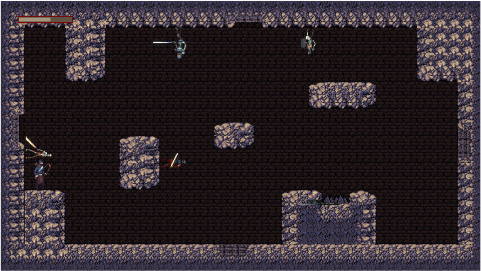
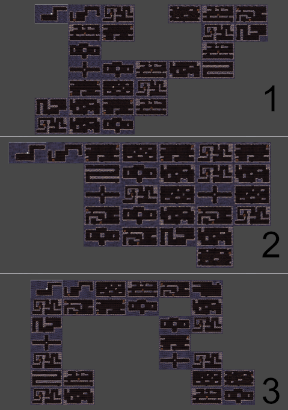
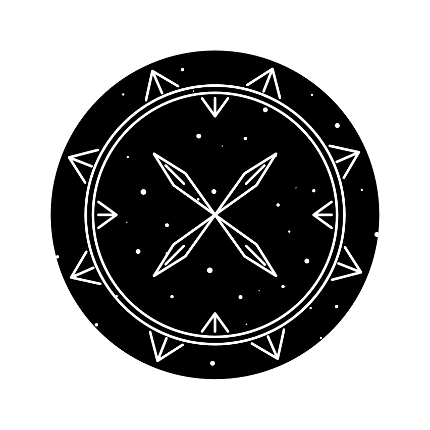

Lash
March 13th, 2020
You can play Lash here.
Lash is my game for the 7DRL 2020 jam. 7DRL stands for 7-day rogue like. I decided to take my previous game, Grid, and expand on the gravity mechanic in a rogue-like dungeon crawler. I spent a week on this, and it was fun, yet surprisingly complex.
In this game, the player can choose their gravity direction, and can also "lash" enemies and objects around to different directions. Yes, this was inspired by The Stormlight Archive.
I started with the player controller from Grid, and started to modify it to allow player control of the gravity. I ended up reworking it and getting rid of unnecessary parts, basically gutting the system and getting a simple gravity controller instead.
This game contains some of the most complex systems I've made so far. There's a dungeon generator, enemies with some very rudimentary follow behavior, an animation controller that's more involved than I've ever made, I learned how to use the new input system, and for the first time ever, I implemented a simple difficulty system.
The Dungeon Generator
The dungeon generation is controlled by the difficulty setting: the higher the difficulty, the more rooms spawn, and the more branching is allowed.
The first two rooms in the dungeon are always constant, as is the boss room, though it gets spawned in a random place each time. All the other rooms in the dungeon are randomly chosen from a list of rooms, and the layout of the dungeon is also randomly generated.
After the layout is generated, all adjacent rooms are connected to each other, and the doors are locked until all the enemies in the room are killed.
Each door has three possible states: Locked, Open, and Disabled. Doors that don't have a room next to them are disabled, and all others are locked until the room is finished.
When the player passes through a door, the door's direction is used to determine which door in the next room the player should move to.
Gravity Objects
The player, all enemies, and rocks all inherit from GravityObject. This class contains the basic logic for the physics, setting the gravity direction, activating appropriate colliders based on the orientation, health, etc...
The Player
The player controller started off as the controller from Grid, but I ended up simplifying it a lot.
I started by moving to the new input system, which uses actions instead of checking the input each frame. This means I had to restructure the way input is handled. I like the way the new input system works, though. It's very flexible and made it easy to support controllers.
Next, I implemented the gravity circle, the mechanic I use to change gravity.

The gravity circle has two modes: Self, and Other. When activated, it slows down time and allows the player to choose a gravity direction using the arrow keys or the right stick. The color is chosen based on the mode. When deactivated, it changes the gravity direction for either the player or up to two enemies/objects in the radius. It also has a boost system that adds a multiplier to the gravity strength, but that ended up not being used.
Finally, I made attacks and animations. To attack, the player casts several rays and deals damage to all enemies in range.
Looking Back
This game was a challenge. It could still use a lot of work and polish, especially in the game and level design areas, as well as game feel. The combat is not satisfying at all, it needs more sound effects, and the enemies are dull. I need to learn about AI and state machines, in order to create better enemies.
That said, I had a blast making it, and I'm glad I joined the jam! Maybe one day I'll return to this project and improve it.
